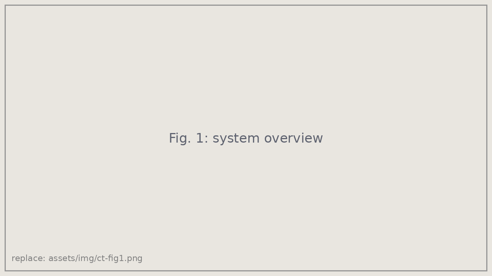
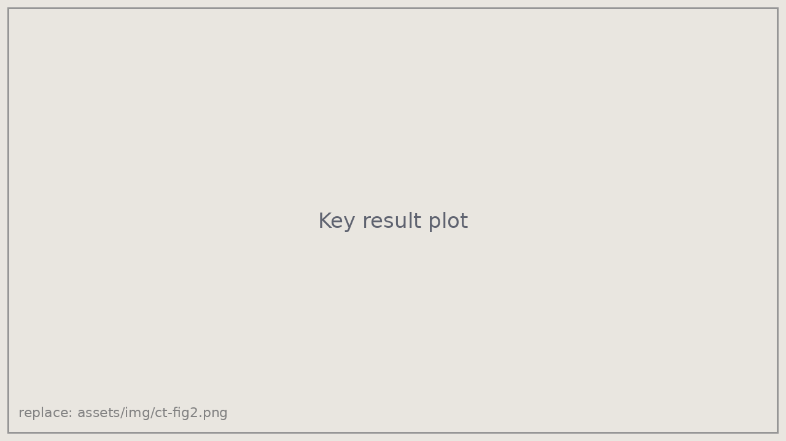

Co-first authorICRA 2027 (under review)
Integrated Respiratory Sensing and Gated Control for Autonomous Needle Insertion via CT Bore Robotic Arm
Under review at IEEE International Conference on Robotics and Automation (ICRA), 2027 · * Equal contribution
Overview
CT-guided needle procedures such as biopsies and ablations require placing a needle precisely into a target that moves as the patient breathes. This work puts a robotic arm inside the CT bore, senses the patient's respiration in real time, and gates needle insertion so it happens only during a safe, repeatable window of the breathing cycle. [Tighten this to 2–3 sentences in your own words, and add the headline result, e.g. targeting error in mm.]
Approach
- Respiratory sensing: [how breathing is measured and how the gating window is chosen]
- Insertion planning: optimal needle entry points and orientations chosen to avoid bone collision and tissue damage.
- Gated, delay-compensating control: the controller compensates for signal and actuation latency so the needle advances within the breathing window rather than after it.
- System integration: [hardware, CT setup, phantom or cadaver experiments]


My contribution
- Led the project to ICRA submission as co-first author, coordinating a 7-person team across mechanical and software work.
- Developed the delay-compensating control scheme that times insertion within the breathing cycle.
- Planned optimal needle insertion points and orientations to avoid bone and tissue damage.
- Implemented the simulation used to develop and validate the controller. [Confirm and adjust.]
Citation
@article{huang2026ctneedle,
title = {Integrated Respiratory Sensing and Gated Control for Autonomous
Needle Insertion via CT Bore Robotic Arm},
author = {Huang, Emma and Bohley, Moira and others},
journal = {arXiv preprint arXiv:2610.30452},
year = {2026}
}